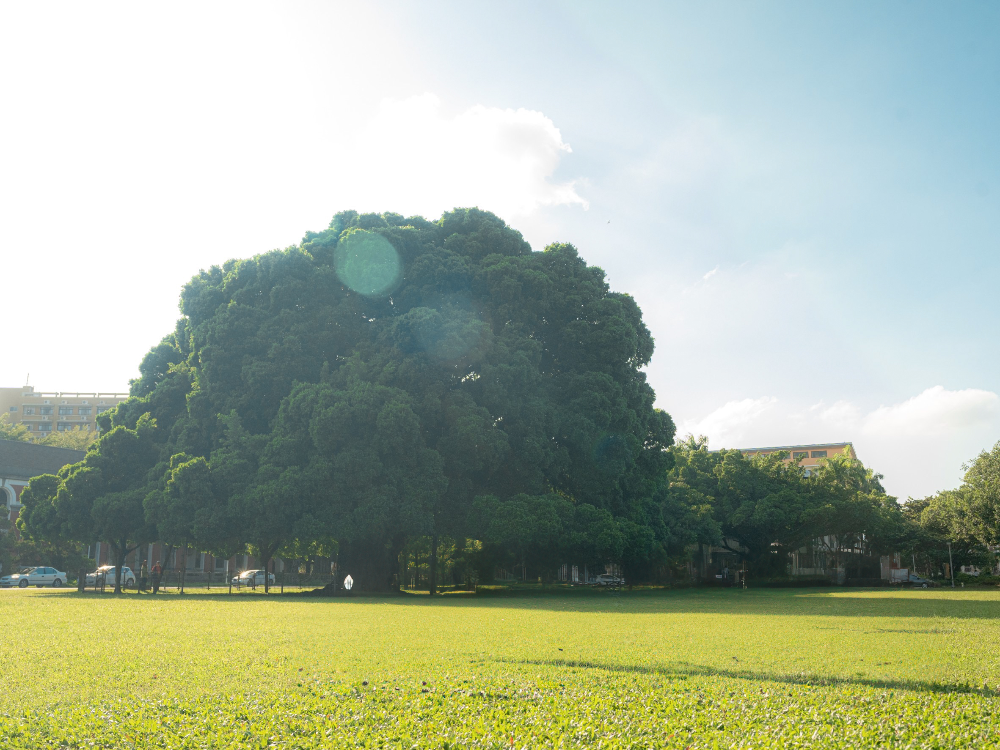

TAINAN
33rd International Conference on Transdisciplinary Engineering



33rd International Conference on Transdisciplinary Engineering

As intelligent systems increasingly shape our environments, behaviors, and decision-making, the question of human agency becomes more pressing than ever. This year’s conference invites transdisciplinary perspectives to explore how design—integrated with engineering, data science, and the humanities—can reinforce autonomy, emotional well-being, and ethical engagement in complex socio-technical systems. From affective computing and adaptive interfaces to human-in-the-loop systems and resilient infrastructures, we seek contributions that reimagine intelligent futures where people are not only present—but empowered.
Paper Abstract
Poster Abstract
Workshop Abstract
| Time | July 6th Mon | July 7th Tue | July 8th Wed | July 9th Thu | July 10th Fri |
|---|---|---|---|---|---|
| Morning | Registration | Opening / Keynote | Sessions / Invited | Sessions / Invited | Visits |
| Afternoon | Workshops | Sessions | Special / Sessions | Sessions / Closing | Culture Visit |
| Evening | Welcome | — | — | Gala Dinner | — |